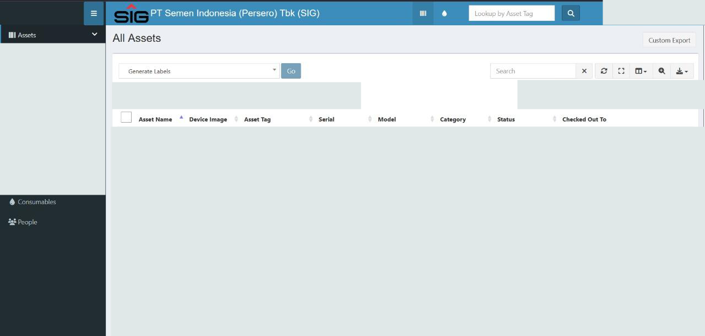

KERJA PRAKTIK JULI 2025
Pendataan aset &
dokumen digital.
PT Semen Indonesia (Persero) Tbk. · Gresik
Membantu pengembangan sistem IT Asset Management berbasis Snipe-IT, dengan fokus pada pendaftaran perangkat dan penyusunan dokumen pendataan.
- Halaman pendaftaran perangkat pribadi dan aset.
- Template berita acara dan pembuatan PDF otomatis.
- Koordinasi kebutuhan, validasi pekerjaan, dan dokumentasi.
DOKUMENTASI APLIKASIITAM / 2025
